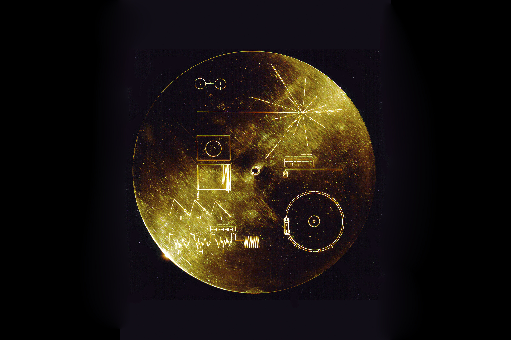

VOYEGER1

Voyager 1 is a space probe that was launched by NASA on September 5, 1977. Part of the Voyager program to study the outer Solar System, Voyager 1 was launched 16 days after its twin, Voyager 2. Having operated for 43 years and 24 days as of September 29, 2020, the spacecraft still communicates with the Deep Space Network to receive routine commands and to transmit data to Earth. At a distance of 150.6 AU from Earth as of September 17, 2020, it is the most distant man-made object from Earth.
The probe's objectives included flybys of Jupiter, Saturn, and Saturn's largest moon, Titan. Although the spacecraft's course could have been altered to include a Pluto encounter by forgoing the Titan flyby, exploration of the moon took priority because it was known to have a substantial atmosphere. Voyager 1 studied the weather, magnetic fields, and rings of the two planets and was the first probe to provide detailed images of their moons.
In a further testament to the robustness of Voyager 1, the Voyager team tested the spacecraft's trajectory correction maneuver (TCM) thrusters in late 2017 (the first time these thrusters had been fired since 1980). Voyager 1's extended mission is expected to continue until about 2025 when its radioisotope thermoelectric generators will no longer supply enough electric power to operate its scientific instruments.
KNOW THE POSITION OF VOYEGER1!!!!!
VOYEGER2

The two-spacecraft Voyager missions were designed to replace original plans for a “Grand Tour” of the planets that would have used four highly complex spacecraft to explore the five outer planets during the late 1970s.
NASA's Voyager 2 is the second spacecraft to enter interstellar space. On Dec. 10, 2018, the spacecraft joined its twin—Voyager 1—as the only human-made objects to enter the space between the stars.
Voyager 1 and 2 were designed to take advantage of a rare planetary alignment to study the outer solar system up close. Voyager 2 targeted Jupiter, Saturn, Uranus and Neptune.
Like its sister spacecraft, Voyager 2 also was designed to find and study the edge of our solar system.
Voyager 2 is the only spacecraft to study all four of the solar system's giant planets at close range.
Voyager 2 discovered a 14th moon at Jupiter.
Voyager 2 was the first human-made object to fly past Uranus.
At Uranus, Voyager 2 discovered 10 new moons and two new rings.
Voyager 2 was the first human-made object to fly by Neptune.
At Neptune, Voyager 2 discovered five moons, four rings, and a "Great Dark Spot."
KNOW THE POSITION OF VOYEGER2!!!!!
GOLDEN RECORD

The following is a listing of pictures electronically placed on the phonograph records which are carried onboard the Voyager 1 and 2 spacecraft. The contents of the record were selected for NASA by a committee chaired by Carl Sagan of Cornell University, et. al. Dr. Sagan and his associates assembled 115 images and a variety of natural sounds, such as those made by surf, wind and thunder, birds, whales, and other animals.
To this they added musical selections from different cultures and eras, and spoken greetings from Earth-people in fifty-five languages, and printed messages from President Carter and U.N. Secretary General Waldheim. Each record is encased in a protective aluminum jacket, together with a cartridge and a needle. Instructions, in symbolic language, explain the origin of the spacecraft and indicate how the record is to be played. The 115 images are encoded in analog form.
The remainder of the record is in audio, designed to be played at 16-2/3 revolutions per minute. It contains the spoken greetings, beginning with Akkadian, which was spoken in Sumer about six thousand years ago, and ending with Wu, a modern Chinese dialect. Following the section on the sounds of Earth, there is an eclectic 90-minute selection of music, including both Eastern and Western classics and a variety of ethnic music. Once the Voyager spacecraft leave the solar system, they will find themselves in empty space. It will be forty thousand years before they make a close approach to any other planetary system.